¿La Entrada construida se ve como la maqueta que aprobaste?
P1 Entrada frente a su maqueta. A la izquierda, la maqueta aprobada (sin el cromo de la sala de diseño); a la derecha, la vitrina que se construyó en el sprint 2, capturada del export estático entrando por el índice. 10 pares: 380 px y escritorio × oscuro y claro × español e inglés, más dos como experto. La matriz de qué mirar está al pie.
380 px · oscuro · ES · líder
docs/diseno/01-entrada.html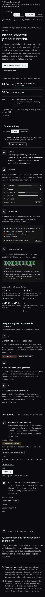
out/es.html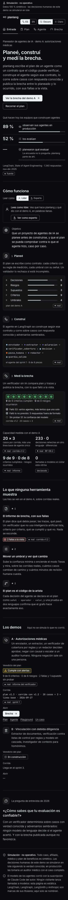
380 px · oscuro · EN · líder
docs/diseno/01-entrada.html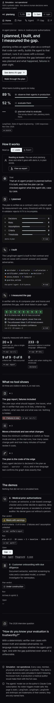
out/en.html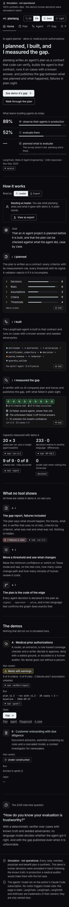
380 px · claro · ES · líder
docs/diseno/01-entrada.html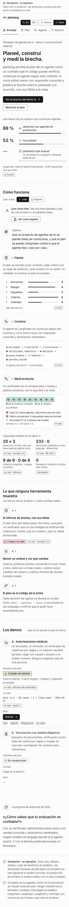
out/es.html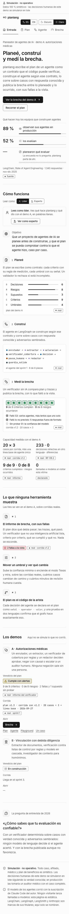
380 px · claro · EN · líder
docs/diseno/01-entrada.html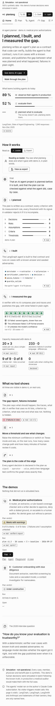
out/en.html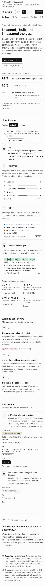
1280 px · oscuro · ES · líder
docs/diseno/01-entrada.html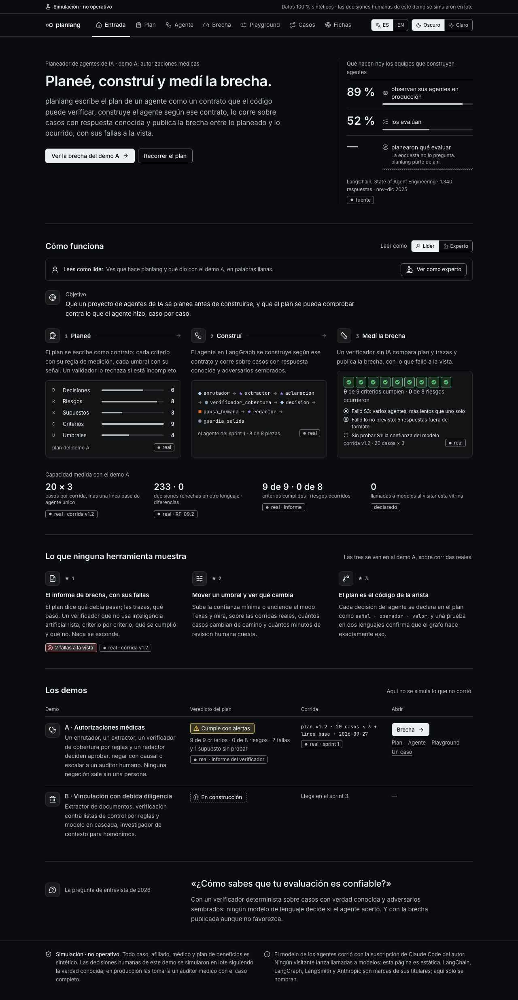
out/es.html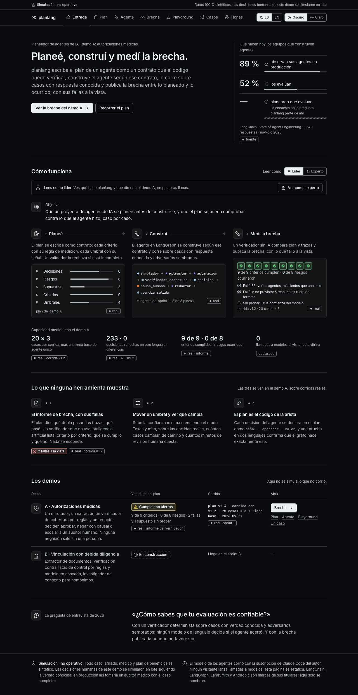
1280 px · oscuro · EN · líder
docs/diseno/01-entrada.html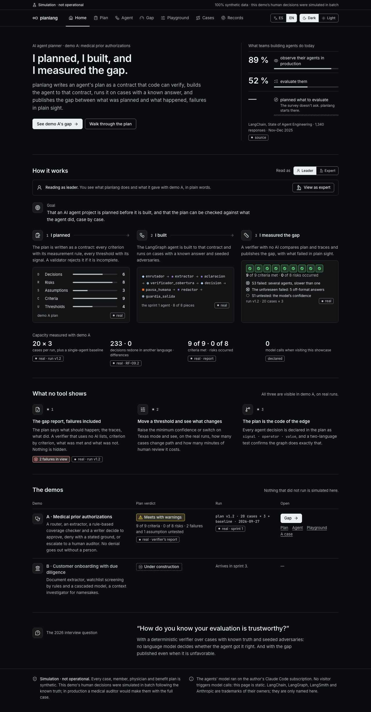
out/en.html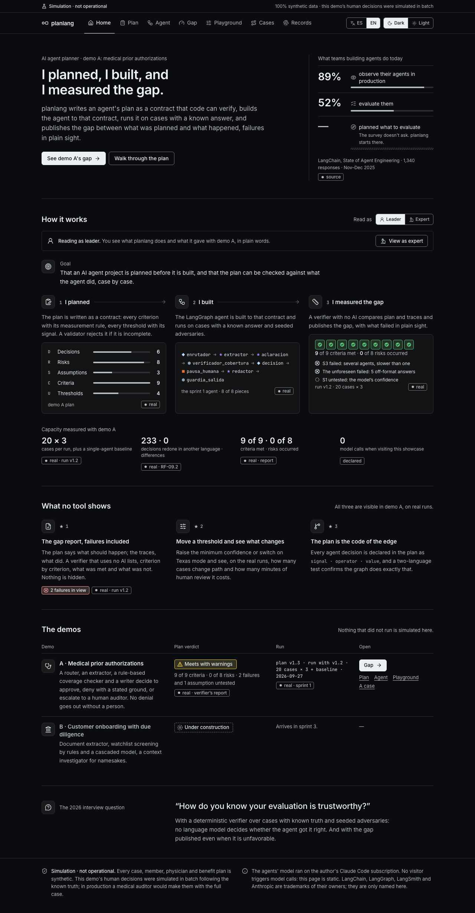
1280 px · claro · ES · líder
docs/diseno/01-entrada.html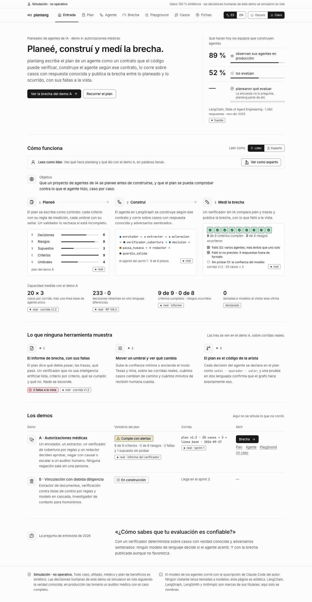
out/es.html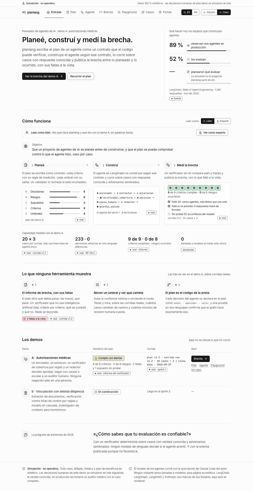
1280 px · claro · EN · líder
docs/diseno/01-entrada.html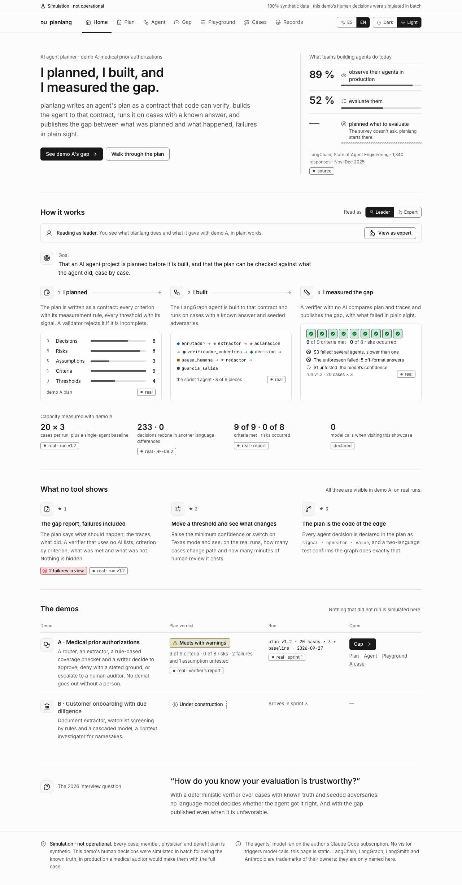
out/en.html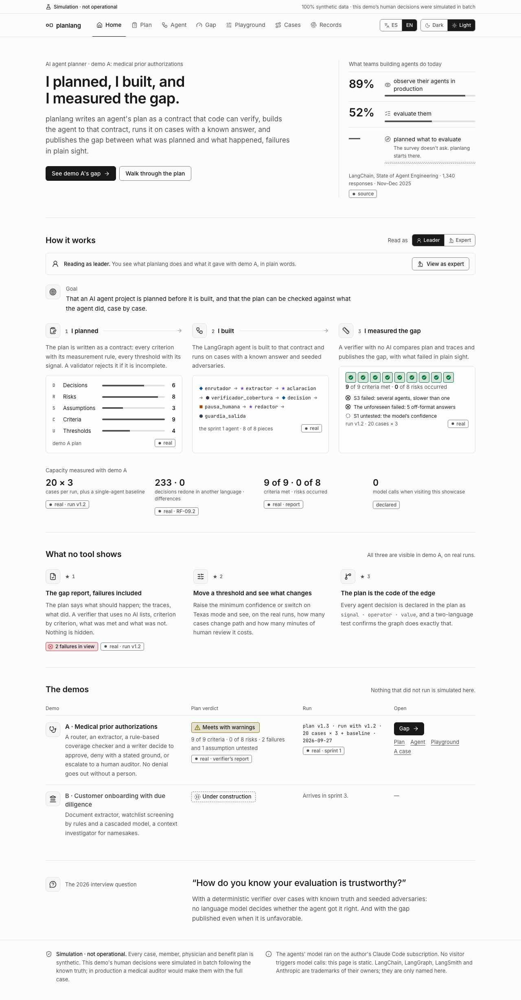
1280 px · oscuro · ES · experto
docs/diseno/01-entrada.html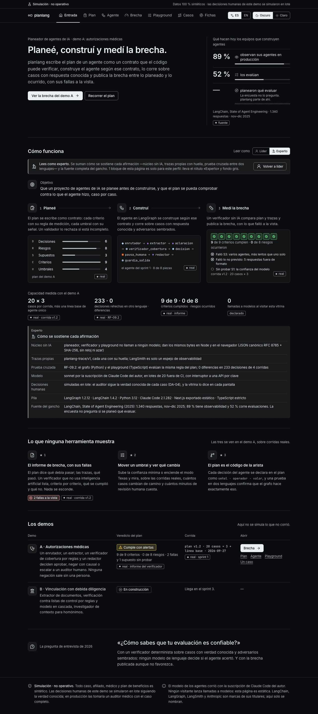
out/es.html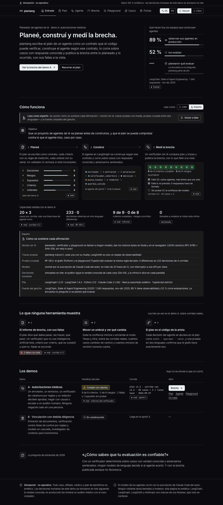
380 px · oscuro · ES · experto
docs/diseno/01-entrada.html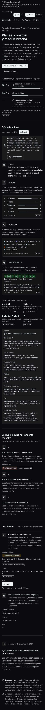
out/es.html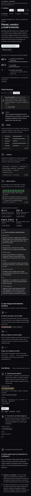
Qué mirar y qué deberías ver
| # | Pantalla | Dónde | Qué hacer | Qué debe verse |
|---|---|---|---|---|
| 1 | P1 Entrada | Arriba: la tesis y el gancho | Lee el titular y la columna de la derecha. | «Planeé, construí y medí la brecha» y los datos con su fuente: 89 % observan, 52 % evalúan, nadie pregunta si se planeó qué evaluar. |
| 2 | P1 Entrada | «Cómo funciona» | Lee el objetivo y los tres pasos. | El objetivo en una frase; «Construí» con las 8 piezas del agente real; «Medí la brecha» con 9 de 9 criterios y lo que falló, nombrado. |
| 3 | P1 Entrada | «Capacidad medida», bajo los tres pasos | Mira las cuatro cifras. | 20 × 3 casos, 233 decisiones con 0 diferencias, 9 de 9 · 0 de 8 y 0 llamadas a modelos, cada una con su procedencia. |
| 4 | P1 Entrada | «Los demos», fila A | Compara la columna «Corrida» con la maqueta. | Demo A «Cumple con alertas». La corrida dice «plan v1.3 · corrida con v1.2»: el informe es el del plan v1.3 sobre el lote que corrió con la v1.2 (la maqueta decía «plan v1.2»). |
| 5 | P1 Entrada | Botón «Ver como experto» | Mira el par «experto». | Aparece «Cómo se sostiene cada afirmación» con el rótulo «Experto»: núcleo sin IA, trazas, prueba cruzada, modelo, decisiones simuladas, pila y fuente. |
| 6 | P1 Entrada | Barra de arriba, en el teléfono | Mira los pares de 380 px. | Las pestañas bajan a su propia fila y se deslizan de lado; la página no se desplaza de lado. |
| 7 | P1 Entrada | Toda la página, tema claro | Mira los pares «claro». | Los mismos colores que la maqueta en claro; ningún texto en gris tenue sobre blanco. |
| 8 | P1 Entrada | Toda la página, en inglés | Mira los pares «en». | Todo redactado en inglés, sin español residual; decimales con punto y porcentajes pegados («89%», como pide el design system para el inglés; la maqueta los dejaba con espacio). |
Mediciones del arnés
- ✓ vitrina 380 oscuro es lider — sin desplazamiento lateral · fuentes cargadas · consola limpia
- ✓ vitrina 380 oscuro en lider — sin desplazamiento lateral · fuentes cargadas · consola limpia
- ✓ vitrina 380 claro es lider — sin desplazamiento lateral · fuentes cargadas · consola limpia
- ✓ vitrina 380 claro en lider — sin desplazamiento lateral · fuentes cargadas · consola limpia
- ✓ vitrina 1280 oscuro es lider — sin desplazamiento lateral · fuentes cargadas · consola limpia
- ✓ vitrina 1280 oscuro en lider — sin desplazamiento lateral · fuentes cargadas · consola limpia
- ✓ vitrina 1280 claro es lider — sin desplazamiento lateral · fuentes cargadas · consola limpia
- ✓ vitrina 1280 claro en lider — sin desplazamiento lateral · fuentes cargadas · consola limpia
- ✓ vitrina 1280 oscuro es experto — sin desplazamiento lateral · fuentes cargadas · consola limpia
- ✓ vitrina 380 oscuro es experto — sin desplazamiento lateral · fuentes cargadas · consola limpia
Pasada de interacción (regla 22)
- ✓ tema → Claro
- ✓ tema → Oscuro
- ✓ Leer como → Experto
- ✓ Volver a líder
- ✓ Ver como experto
- ✓ idioma → EN
- ✓ pestaña → Plan
Generado por node scripts/capturar-vitrina.mjs --mirada p1 sobre el export de pnpm build. Las capturas se regeneran; no se editan a mano.